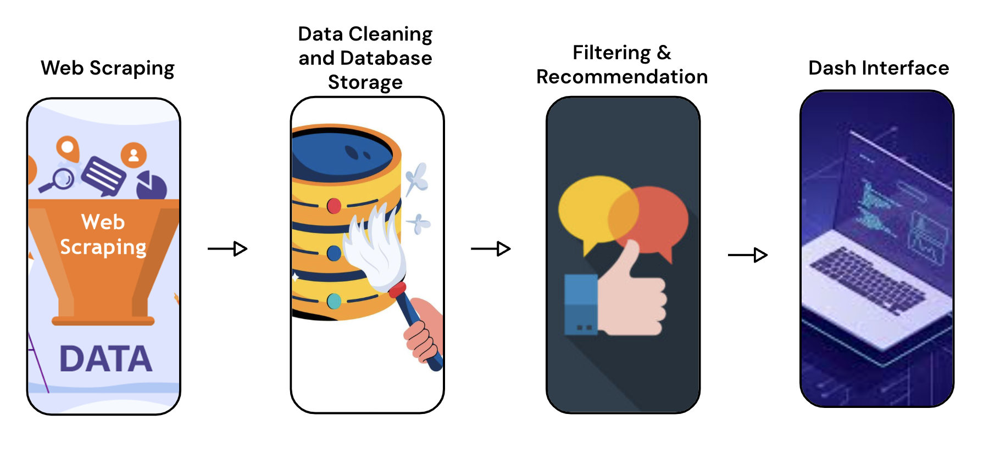
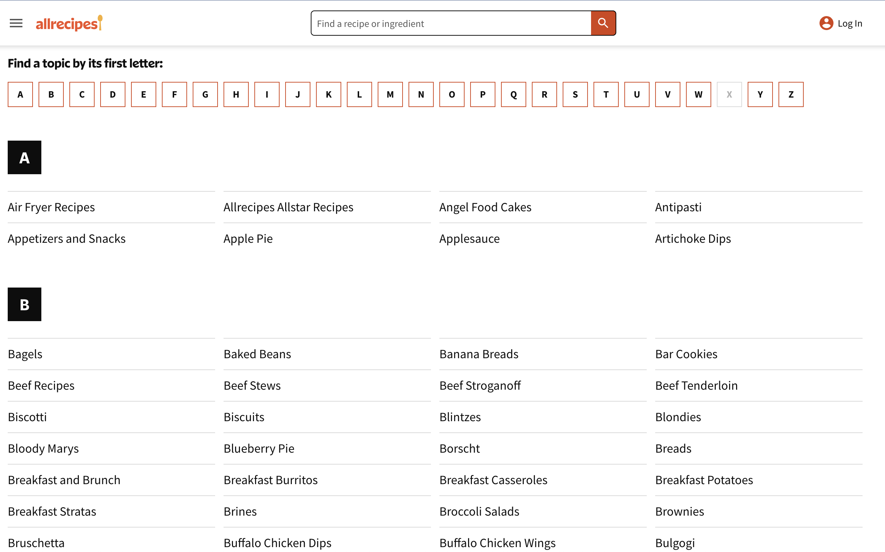
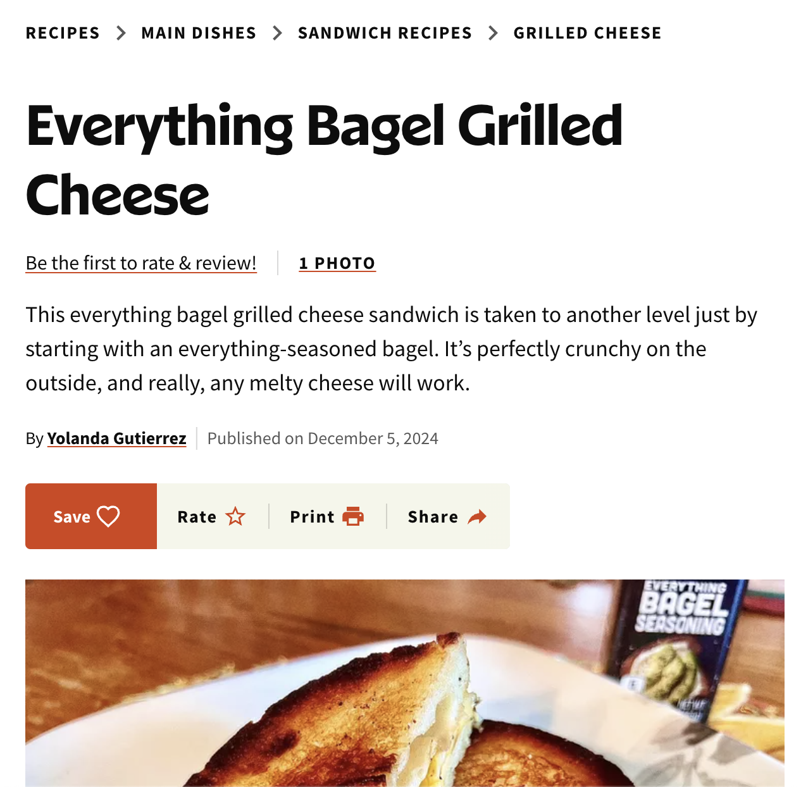
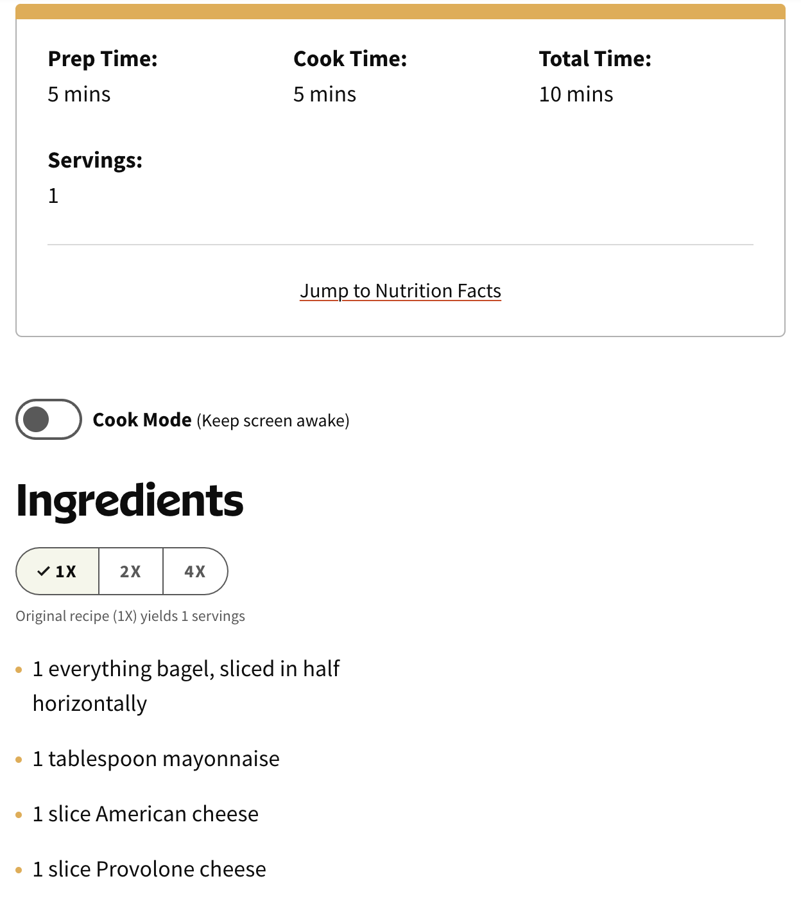
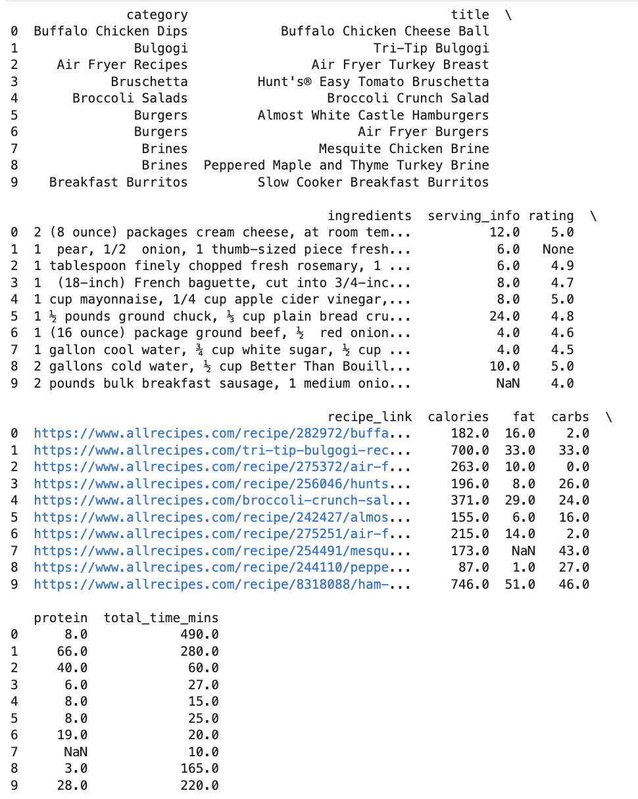
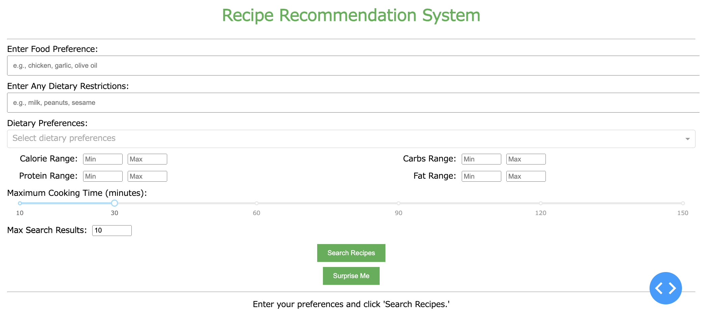
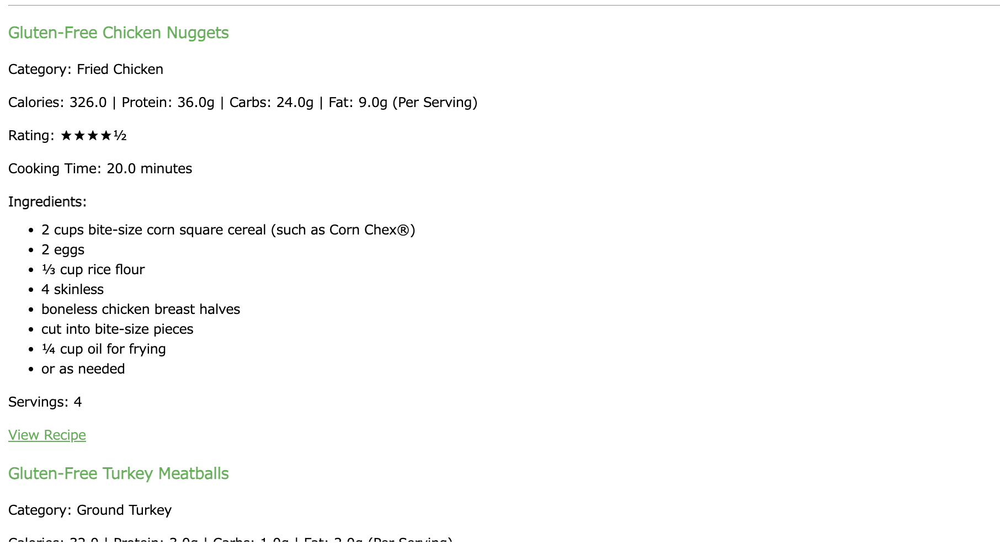

import scrapy
from scrapy_selenium import SeleniumRequest
class AllRecipesSpider(scrapy.Spider):
name = 'allrecipes'
allowed_domains = ['allrecipes.com']
start_urls = ['https://www.allrecipes.com/recipes-a-z-6735880']
def start_requests(self):
yield SeleniumRequest(
url=self.start_urls[0],
callback=self.parse_index
)
def parse_index(self, response):
# Select links for each type of recipe
initial_links = response.css('a.mntl-link-list__link::attr(href)').getall()
categories = response.css('a.mntl-link-list__link::text').getall()
for link, category in zip(initial_links, categories):
yield response.follow(link, callback=self.parse_recipe_link, meta={'category': category.strip()})
def parse_recipe_link(self, response):
# Extract details for individual recipe pages
category = response.meta.get('category', 'Unknown')
recipe_links = response.css('a.comp.mntl-card-list-items::attr(href)').getall()
for link in recipe_links:
if 'www.allrecipes.com/article/' not in link and 'www.allrecipes.com/gallery/' not in link:
yield response.follow(link, callback=self.parse_recipe_page, meta={'category': category})
def parse_recipe_page(self, response):
category = response.meta.get('category', 'Unknown')
title = response.css('h1.article-heading.text-headline-400::text').get(default='').strip()
total_time = response.css('div.mm-recipes-details__item:contains("Total Time") div.mm-recipes-details__value::text').get()
prep_time = response.css('div.mm-recipes-details__item:contains("Prep Time") div.mm-recipes-details__value::text').get()
cook_time = response.css('div.mm-recipes-details__item:contains("Cook Time") div.mm-recipes-details__value::text').get()
ingredients = []
for ingredient in response.css('li.mm-recipes-structured-ingredients__list-item'):
quantity = ingredient.css('span[data-ingredient-quantity="true"]::text').get(default='').strip()
unit = ingredient.css('span[data-ingredient-unit="true"]::text').get(default='').strip()
name = ingredient.css('span[data-ingredient-name="true"]::text').get(default='').strip()
full_ingredient = f"{quantity} {unit} {name}".strip()
ingredients.append(full_ingredient)
ingredients = ', '.join(ingredients) if ingredients else "No ingredients listed"
nutrition_facts = {}
nutrition_rows = response.css('tbody.mm-recipes-nutrition-facts-summary__table-body tr.mm-recipes-nutrition-facts-summary__table-row')
for row in nutrition_rows:
nutrient_value = row.css('td.mm-recipes-nutrition-facts-summary__table-cell.text-body-100-prominent::text').get(default='').strip()
nutrient_name = row.css('td.mm-recipes-nutrition-facts-summary__table-cell.text-body-100::text').get(default='').strip()
if nutrient_value and nutrient_name:
nutrition_facts[nutrient_name] = nutrient_value
serving_info = response.css('p.mm-recipes-serving-size-adjuster__meta::text').get()
rating = response.css('div.mm-recipes-review-bar__rating::text').get(default='No rating available').strip()
recipe_link = response.url
yield {
'category': category,
'title': title,
'total_time': total_time,
'prep_time': prep_time,
'cook_time': cook_time,
'ingredients': ingredients,
'serving_info': serving_info,
'nutrition_facts': nutrition_facts, # Added nutrition facts to the output
'rating': rating,
'recipe_link': recipe_link
}Project Description
The Recipe Recommendation Web App is designed to help users easily find recipes based on the ingredients they have at home and their specific nutritional goals. The app addresses two major challenges in meal planning: ingredient-based recipe discovery and nutrition tracking. The first feature allows users to input the ingredients they currently have in their kitchen or specify a type of meal (e.g., “chicken and rice”), and the app generates a list of recipes that can be made with those ingredients. This helps users minimize food waste by utilizing available ingredients. The second feature is focused on users’ nutritional goals. Users can set specific dietary parameters, such as maximum calorie count or minimum protein intake, and the app will suggest recipes that meet those criteria, ensuring users stay on track with their health goals.
The app’s user interface is designed to be intuitive and interactive, enabling users to easily input ingredients, dietary restrictions, and meal preferences. The app connects to a recipe database, which contains detailed information on each recipe, including nutritional data. Users can browse through a list of recipe recommendations that are ranked based on user ratings and relevance to their inputs. They can then select a recipe based on factors like taste preferences, nutritional fit, or ingredient availability. Once a recipe is chosen, users can click on a link to view the full recipe page, which includes step-by-step instructions, ingredient quantities, and nutritional breakdown.
The three main technical parts of our project were web scraping recipe and nutritional information from Allreipes.com using Scrapy, storage of scraped and cleaned data within an SQLite3 database, and implementation of a Dash web app to allow for user-friendly input and display of recommended recipes.
Our project can be found at the following GitHub repository: https://github.com/calebjwilliams/reciperecommendation.

1. Web Scraping with Scrapy
The first step in building the Recipe Recommendation Web App was collecting a comprehensive dataset of recipes. For this purpose, we utilized Scrapy. Scrapy allowed us to automate the process of collecting essential recipe information such as recipe titles, ingredients, preparation times, cooking times, serving sizes, nutritional facts, and user ratings. The scraper leveraged the Scrapy framework alongside Selenium to dynamically load and navigate pages, ensuring all desired data could be captured effectively, even from JavaScript-rendered content.
The scraper begins by traversing the recipe index page and extracting links to individual recipe categories. From there, it navigates through recipe listings within each category to reach individual recipe pages, where it extracts structured nutritional and ingredient data we needed using CSS selectors. This multi-layered approach ensures comprehensive data collection.
Here are the key data points extracted by the web scraper:
- Category: The category or type of recipe (this is what the spider started with. e.g., “Desserts,” “Main Dishes”).
- Title: The name of the recipe.
- Total Time: The total estimated time required to prepare the recipe.
- Prep Time: The time required to prepare the ingredients.
- Cook Time: The time required for cooking the recipe.
- Ingredients: A list of all ingredients with their quantities, units, and names.
- Serving Info: Information about the number of servings the recipe yields.
- Nutrition Facts: Detailed nutritional information, including calories, fats, carbs, and proteins.
- Rating: User rating of the recipe (if available).
- Recipe Link: The URL of the recipe for additional details.
Here’s an example of the pages the scaper naviages through to collect the recipe information. 1. Starts on https://www.allrecipes.com/recipes-a-z-6735880 2. Navigates to each individual recipe link 3. On each individual recipe page, collects recipe information



1a. Data Cleaning
The raw dataset underwent several cleaning steps to ensure its quality and usability for the Recipe Recommendation System. Cleaning involved handling missing data, standardizing formats, and transforming fields for easier querying and filtering. Below are the steps involved:
Removed rows with missing or irrelevant data (e.g., “No ingredients listed”).
Extracted and standardized nutrition facts, such as calories, fats, carbs, and proteins.
Converted time-related fields (e.g., “1 hr 10 mins”) into a unified numerical format representing total minutes.
Extracted serving information and replaced missing or irrelevant ratings.
Standardized data types for consistent querying.
# Drop rows where the ingredients column has "No ingredients listed"
df_cleaned = df[df['ingredients'] != "No ingredients listed"]
# Reset index after dropping rows
df_cleaned = df_cleaned.reset_index(drop=True)
# Extract nutrition facts into separate columns
nutrition_df = df_cleaned['nutrition_facts'].apply(eval).apply(pd.Series)
nutrition_df.rename(columns=lambda x: x.lower(), inplace=True)
# Merge the extracted nutrition facts back into the main DataFrame
df_cleaned = pd.concat([df_cleaned, nutrition_df], axis=1).drop(columns=['nutrition_facts'])
# Extract the numeric value only if it exists, ignoring NaN
df_cleaned['serving_info'] = df_cleaned['serving_info'].dropna().str.extract(r'yields (\d+)(?: servings)?')
# Convert to integer only for non-NaN values
df_cleaned['serving_info'] = pd.to_numeric(df_cleaned['serving_info'], errors='coerce')
# Replace "No rating available" with NaN
df_cleaned['rating'] = df_cleaned['rating'].replace("No rating available", np.nan)
# Convert time to minutes
def convert_to_minutes(time_str):
"""
Converts a time duration string into the total number of minutes.
Parameters:
time_str : str
Returns:
int or None
""""
if pd.isna(time_str):
return None # Keep NaN if missing
# Extend time_map to handle singular and plural forms, including days
time_map = {"day": 1440, "days": 1440, "hr": 60, "hrs": 60, "min": 1, "mins": 1}
# Split the time string into parts and calculate total minutes
time_parts = time_str.split()
return sum(int(num) * time_map[unit] for num, unit in zip(time_parts[:-1:2], time_parts[1::2]))
# Apply the function to the relevant columns
df_cleaned['total_time_mins'] = df_cleaned['total_time'].apply(convert_to_minutes)
# Drop total time, prep time, and cook time columns
df_cleaned.drop(columns=['total_time', 'prep_time', 'cook_time'], inplace=True)
# Explicitly convert each column to string, handling edge cases
columns_to_convert = ['category', 'title', 'ingredients', 'recipe_link']
for col in columns_to_convert:
df_cleaned[col] = df_cleaned[col].astype('string')
# Ensure numeric columns are converted to string before applying string operations
numeric_columns = ['calories', 'fat', 'carbs', 'protein']
for col in numeric_columns:
df_cleaned[col] = df_cleaned[col].astype(str) # Convert to string
df_cleaned[col] = pd.to_numeric(
df_cleaned[col].str.replace(r'[^\d.]+', '', regex=True), errors='coerce'
)
# Convert numeric columns back to appropriate numeric types
df_cleaned['calories'] = df_cleaned['calories'].astype('float64')
df_cleaned['fat'] = df_cleaned['fat'].astype('float64')
df_cleaned['carbs'] = df_cleaned['carbs'].astype('float64')
df_cleaned['protein'] = df_cleaned['protein'].astype('float64')2. Storage in SQLite Database
The second technical aspect of our project involved working with sqlite3. After scraping and cleaning the recipe data, it needed to be stored in an organized format while allowing for quick and efficient access based on user inputs. We chose SQLite because of it’s simple set up and portabliliy—ideal for a small-scale scale application like this one.
Once the recipe data was cleaned and preprocessed we inserted it into an SQLite database using a table specifically designed to store recipes. This table includes fields for the recipe title, ingredients, preparation instructions, calorie count, and other relevant details. Each recipe is stored as a row, and its attributes are mapped to corresponding columns. For example, the “ingredients” column contains a string of all ingredients required for the recipe, while the “calories” column holds the nutritional value per serving. By organizing the data in this structured format, the dash app we later implemented can quickly and easliy retrieve necessary recipe information.
import sqlite3
# connect to SQLite database
conn = sqlite3.connect('recipes.db')
# save the cleaned DataFrame to a table called 'recipes'
df_cleaned.to_sql('recipes', conn, if_exists='replace', index=False)
conn.close()Here’s what the first 10 rows of our database looks like:

3. Recommendation and Dash Web App Implementation
The final component of our project was the implementation of a Dash web app, that allows users to interact with the recipe database and receive recommendations based on their preferences. The implementation queries the SQLite database to retrieve data which is then data is then filtered dynamically using Pandas DataFrame operations in response to user inputs.
The Dash app begins with a layout, defined using a combination of html and dcc components. These include text input fields for users to specify their food preferences and dietary restrictions, a dropdown for selecting dietary preferences (e.g., “Vegetarian,” “Vegan”), sliders for numeric range inputs like calorie limits and cooking time, and buttons for initiating searches or requesting surprise recipes. Each input field is styled for usability and designed to gather specific parameters that feed into the recommendation logic.
# App layout
app.layout = html.Div([
html.H1("Recipe Recommendation System", style={'text-align': 'center', 'color': '#4CAF50'}),
html.Hr(),
# Ingredients input
html.Div([
html.Label("Enter Food Preference:"),
dcc.Input(id='ingredients-input', type='text', placeholder='e.g., chicken, garlic, olive oil',
style={'width': '100%', 'padding': '10px'}),
], style={'margin-bottom': '10px'}),
# Dietary restrictions
html.Div([
html.Label("Enter Any Dietary Restrictions:"),
dcc.Input(id='restrictions-input', type='text', placeholder='e.g., milk, peanuts, sesame',
style={'width': '100%', 'padding': '10px'}),
], style={'margin-bottom': '10px'}),
# Dietary preferences dropdown
html.Div([
html.Label("Dietary Preferences:"),
dcc.Dropdown(
id='dietary-preferences-dropdown',
options=[
{'label': 'Vegetarian', 'value': 'vegetarian'},
{'label': 'Vegan', 'value': 'vegan'},
{'label': 'Gluten-Free', 'value': 'gluten-free'},
{'label': 'Keto', 'value': 'keto'},
],
placeholder="Select dietary preferences",
multi=True,
style={'cursor': 'pointer'}
)
], style={'margin-bottom': '10px'}),
html.Div([
html.Div([
# Left side: Calorie and Protein Range
html.Div([
html.Label("Calorie Range:", style={'width': '140px', 'text-align': 'right', 'margin-right': '10px'}),
dcc.Input(id='calorie-min', type='number', placeholder='Min', style={'margin-right': '10px', 'width': '70px'}),
dcc.Input(id='calorie-max', type='number', placeholder='Max', style={'width': '70px'}),
], style={'display': 'flex', 'align-items': 'center', 'margin-bottom': '10px'}),
html.Div([
html.Label("Protein Range:", style={'width': '140px', 'text-align': 'right', 'margin-right': '10px'}),
dcc.Input(id='protein-min', type='number', placeholder='Min', style={'margin-right': '10px', 'width': '70px'}),
dcc.Input(id='protein-max', type='number', placeholder='Max', style={'width': '70px'}),
], style={'display': 'flex', 'align-items': 'center', 'margin-bottom': '10px'}),
], style={'width': '45%', 'display': 'inline-block'}),
html.Div([
# Right side: Carbs and Fat Range
html.Div([
html.Label("Carbs Range:", style={'width': '140px', 'text-align': 'right', 'margin-right': '10px'}),
dcc.Input(id='carbs-min', type='number', placeholder='Min', style={'margin-right': '10px', 'width': '70px'}),
dcc.Input(id='carbs-max', type='number', placeholder='Max', style={'width': '70px'}),
], style={'display': 'flex', 'align-items': 'center', 'margin-bottom': '10px'}),
html.Div([
html.Label("Fat Range:", style={'width': '140px', 'text-align': 'right', 'margin-right': '10px'}),
dcc.Input(id='fat-min', type='number', placeholder='Min', style={'margin-right': '10px', 'width': '70px'}),
dcc.Input(id='fat-max', type='number', placeholder='Max', style={'width': '70px'}),
], style={'display': 'flex', 'align-items': 'center', 'margin-bottom': '10px'}),
], style={'width': '45%', 'display': 'inline-block', 'margin-left': '5px'}),
], style={'display': 'flex', 'justify-content': 'space-between', 'align-items': 'flex-start'}),
# Cooking time slider
html.Div([
html.Label("Maximum Cooking Time (minutes):"),
dcc.Slider(
id='cooking-time-slider',
min=10,
max=150,
step=5,
value=30,
marks={10: '10', 30: '30', 60: '60', 90: '90', 120: '120', 150: '150'},
tooltip={"placement": "bottom", "always_visible": False}
),
], style={'margin-bottom': '10px'}),
# Max Search Results
html.Div([
html.Label("Max Search Results:", style={'margin-right': '10px', 'font-weight': 'bold'}),
dcc.Input(id='search-input', type='number', min=1, max=25, step=1, value=10,
style={'width': '70px'}),
], style={'display': 'flex', 'align-items': 'center', 'margin-bottom': '10px'}),
# Submit button
html.Div([
html.Button('Search Recipes', id='search-button',
style={'text-align': 'center', 'background-color': '#4CAF50', 'color': 'white', 'padding': '10px 20px', 'border': 'none', 'cursor': 'pointer'}),
], style={'text-align': 'center', 'padding': '5px'}),
# Surprise me button
html.Div([
html.Button('Surprise Me', id='surprise-me', style={'text-align': 'center', 'background-color': '#4CAF50', 'color': 'white', 'padding': '10px 20px', 'border': 'none', 'cursor': 'pointer'})
], style={'text-align': 'center', 'padding': '5px'}),
html.Hr(),
# Placeholder for displaying results
html.Div(id='recipe-results')
])Here’s the final layout of our Dash App:

Data Filtering
The filtering–i.e., recommendation–starts by determining which button triggered the callback. If the user clicks “Surprise Me,” the app bypasses all input-based filtering and randomly selects a specified number of recipes (e.g., 5). This feature allows users to discover recipes they may not have actively searched for, making the app more engaging and exploratory.
For the “Search Recipes” functionality, the callback function processes the following user inputs:
- Dietary Preferences: The app filters recipes based on selected preferences (e.g., “Vegetarian,” “Vegan”). Recipes are matched by searching for these terms in the recipe category column.
- Restrictions: The app excludes recipes containing restricted ingredients by ensuring none of the specified terms are found in the ingredients column.
- Ingredients: Recipes are filtered to include only those that match the specified ingredients. The ingredients column is searched for any of the user-specified keywords.
- Cooking Time: Recipes exceeding the maximum cooking time set by the user are excluded.
After applying all filters, the DataFrame is shuffled and sorted by user ratings or other criteria to ensure a randomized yet relevant set of recommendations is presented. The filtered data is then displayed dynamically on the web app.
Additionally, if no recipes match the user’s criteria, the app displays a friendly message informing the user that their preferences yielded no results.
# Callbacks for functionality
@app.callback(
Output('recipe-results', 'children'),
[Input('search-button', 'n_clicks'), Input('surprise-me', 'n_clicks')],
State('ingredients-input', 'value'),
State('restrictions-input', 'value'),
State('dietary-preferences-dropdown', 'value'),
State('calorie-min', 'value'),
State('calorie-max', 'value'),
State('carbs-min', 'value'),
State('carbs-max', 'value'),
State('protein-min', 'value'),
State('protein-max', 'value'),
State('fat-min', 'value'),
State('fat-max', 'value'),
State('cooking-time-slider', 'value'),
State('search-input', 'value')
)
def recommend_recipes(search_clicks, surprise_clicks, ingredients, restrictions, dietary_preferences,
cal_min, cal_max, prot_min, prot_max, fat_min, fat_max, carbs_min, carbs_max,
max_time, max_results):
"""
Generates a list of recipe recommendations based on user inputs and preferences.
This callback function is triggered when the user clicks either the "Search Recipes"
or "Surprise Me" button. It retrieves recipes from an SQLite database, applies various
filters based on user inputs (e.g., ingredients, dietary preferences, macronutrient ranges),
and returns the results as an interactive HTML list.
Parameters:
search_clicks : int
Number of times the "Search Recipes" button has been clicked.
surprise_clicks : int
Number of times the "Surprise Me" button has been clicked.
ingredients : str
A comma-separated list of desired ingredients to include in the recipes.
restrictions : str
A comma-separated list of restricted ingredients to exclude from the recipes.
dietary_preferences : list of str
A list of dietary preferences (e.g., 'Vegetarian', 'Vegan').
cal_min : int
The minimum calorie value for recipes.
cal_max : int
The maximum calorie value for recipes.
prot_min : int
The minimum protein value for recipes (in grams).
prot_max : int
The maximum protein value for recipes (in grams).
fat_min : int
The minimum fat value for recipes (in grams).
fat_max : int
The maximum fat value for recipes (in grams).
carbs_min : int
The minimum carbohydrate value for recipes (in grams).
carbs_max : int
The maximum carbohydrate value for recipes (in grams).
max_time : int
The maximum cooking time for recipes (in minutes).
max_results : int
The maximum number of recipes to display in the results.
Returns:
html.Div
A Dash HTML Div containing the list of recommended recipes.
""""
# Check if no buttons have been clicked
if not search_clicks and not surprise_clicks:
return html.Div(
"Enter your preferences and click 'Search Recipes.'",
style={'text-align': 'center', 'padding': '5px'}
)
# Identify which button triggered the callback
ctx = callback_context
button_id = ctx.triggered[0]['prop_id'].split('.')[0]
# Proceed only if a button was actually clicked
if button_id not in ['search-button', 'surprise-me']:
return html.Div(
"Enter your preferences and click 'Search Recipes.'",
style={'text-align': 'center', 'padding': '5px'}
)
# Connect to SQLite database
conn = sqlite3.connect('recipes.db')
query = "SELECT * FROM recipes"
df = pd.read_sql(query, conn)
if button_id == 'surprise-me':
# "Surprise Me" button clicked
df = get_random_recipes(df, max_results)
else:
# "Search Recipes" button clicked
# 1. Filter by dietary preferences
if dietary_preferences:
df = apply_dietary_restrictions(dietary_preferences, df)
# 2. Exclude restricted items
if restrictions:
df = exclude_restricted_items(restrictions, df)
# 3. Filter by desired ingredients
if ingredients:
df = filter_by_preferences(ingredients, df)
# 4. Apply numeric range filters
df = filter_by_ranges(df, cal_min, cal_max, prot_min, prot_max, fat_min, fat_max, carbs_min, carbs_max, max_time)
# Shuffle the DataFrame after applying filters
df = df.sample(frac=1).reset_index(drop=True) # Shuffle rows
# Sort by reviews (rating) and limit results
df = df.sort_values('rating', ascending=False).head(max_results)
# Close database connection
conn.close()
# Handle empty results
if df.empty:
return html.Div(
"No recipes matched your preferences!",
style={'text-align': 'center', 'padding': '5px', 'color': '#fc0345'}
)
# Display
return html.Div([
html.Div([
html.H3(row['title'], style={'color': '#4CAF50'}),
html.P(f"Category: {row['category']}"),
html.P(f"Calories: {row['calories']} | Protein: {row['protein']}g | Carbs: {row['carbs']}g | Fat: {row['fat']}g (Per Serving)"),
html.P(f"Rating: {convert_rating_to_stars(row['rating'])}"),
html.P(f"Cooking Time: {row['total_time_mins']} minutes"),
# Format ingredients with each line starting with a number
html.Div([
html.Span("Ingredients:", style={'font-weight': 'bold'}),
html.Ul([
html.Li(ingredient.strip())
for ingredient in row['ingredients'].split(', ')
if ingredient.strip()[0].isdigit() or not ingredient.strip()[0].isdigit()
], style={'margin-top': '10px'})
]),
html.P(f"Servings: {int(row['serving_info']) if pd.notnull(row['serving_info']) else 'N/A'}"),
html.A("View Recipe", href=row['recipe_link'], target="_blank", style={'color': '#4CAF50', 'text-decoration': 'underline'})
], style={'margin-bottom': '20px'})
for _, row in df.iterrows()
])Here’s an example output when a user searches with the following inputs: - Food Preference: ‘chicken’ - Dietary Restriction: ‘peanuts’ - Dietary Preference: ‘Gluten Free’ - Max Cook Time: ‘60 Minutes’

Concluding Remarks
The Recipe Recommendation System we created showcases the power of data-driven personalization in everyday cooking. Initially, the project aimed to incorporate natural language processing (NLP) to generate robust recommendations based on similarity scores, matching recipes to user input with higher accuracy. However, integrating NLP into the Dash interface proved challenging due to computational constraints and compatibility issues. Despite this, the system’s macro-based content filtering successfully allows users to discover recipes tailored to their nutritional preferences, dietary needs, and ingredient availability.
The incorporation of SQLite played a vital role in managing the cleaned dataset efficiently. By storing the data in a structured format, SQLite enabled fast and reliable querying for recommendations based on user input. This lightweight database ensured seamless integration with the Dash app, allowing real-time filtering and retrieval of recipes without the need for an overly complex backend infrastructure.
With more time or resources, exploring alternative embedding models optimized for Dash could enable seamless NLP integration, making the recommendations even more precise. We can also explore ways to incorporate other recipe websites for more recipes available to be recommended. Furthermore, the current system addresses important ethical considerations:
Data Privacy: All data was collected from publicly available sources adhered to terms and conditions to respect data ownership.
Bias in Recommendations: Efforts were made to include diverse recipes and avoid biases toward specific cuisines or dietary preferences, ensuring fair and inclusive recommendations for a wide range of users.
Accessibility: The app is designed with an inutitive and easy to use design with user-friendliness in mind, ensuring easy accessibility.
Overall, the current implementation demonstrates strong performance in creating valuable recipe suggestions, while leaving room for future enhancements to improve precision and user experience further.